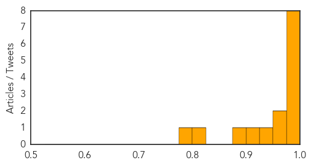

Dengue Fever
30-Day Web Trend
0 alerts, 0 warnings
30-Day Twitter Trend
0 alerts, 0 warnings
Article Locations

Article Confidences

Top Articles:
-
No articles found for Jan 04, 2015
Top Tweets:
-
No tweets found for Jan 04, 2015
Influenza
30-Day Web Trend
1 alerts, 0 warnings

30-Day Twitter Trend
3 alerts, 0 warnings
Article Locations
Article Confidences
Top Articles:
- 0.998
- Flu season 2015 should be taken seriously
- 0.997
- Flu declared an epidemic; Aiken County cases on the rise
- 0.996
- Flu cases slam Colorado hospitals; assisted-living centers hit hard
- 0.983
- New flu strain afflicts Palm Beachers
- 0.980
- Flu cases setting records across Minnesota
- 0.980
- Fauci: 2015 Will be ‘Bad Year’ for the Flu
- 0.980
- CDC Recommends Antiviral Drugs For At-Risk Patients
- 0.980
- CDC Recommends Antiviral Drugs For At-Risk Patients
- 0.971
- Flu concerns in New Mexico
- 0.963
- North Alabama's northern neighbor among states most affected by flu season
- 0.928
- Reporting Of Bird Flu Incidences In Backyard Poultry Has The State Agriculture Department On Its Toes
- 0.916
- Flu Season Will be 'Significant' With Weak Vaccine, Tamiflu Shortages
- 0.891
- Flu sees Iowa hospitals tighten visitation rules
- 0.802
- Avian Flu Outbreak in Washington State Backyard Poultry
- 0.795
- Pharmacist recommends getting ahead of the flu while you can
Top Tweets:
-
No tweets found for Jan 04, 2015